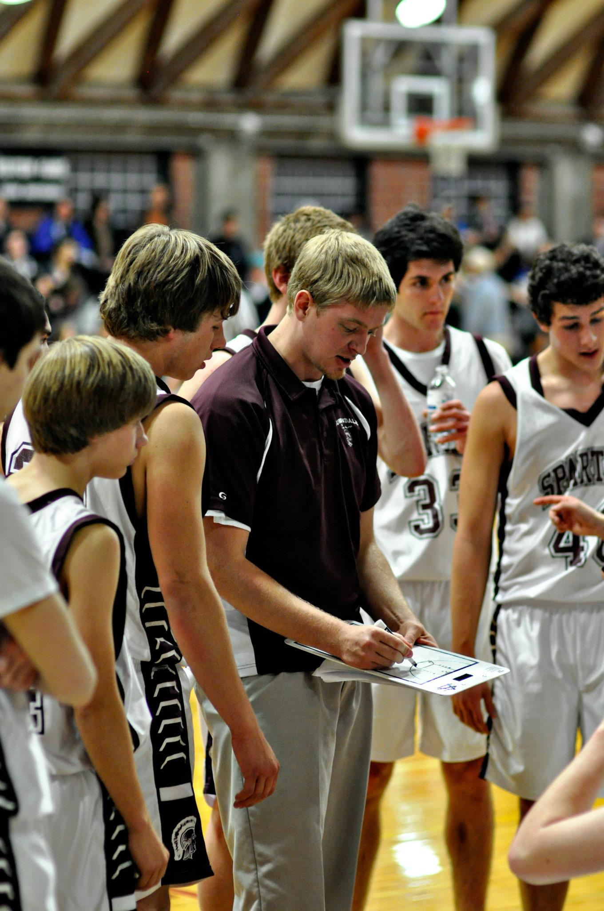

Matthew Evens Coaching
The Coach who would be a teacher
Matthew Evens has worked as a teacher for nearly for more than 7 years in the private sector, instructing teenagers in subjects such as Health, Physical Education, Computer Science and programming, and religeous studies.